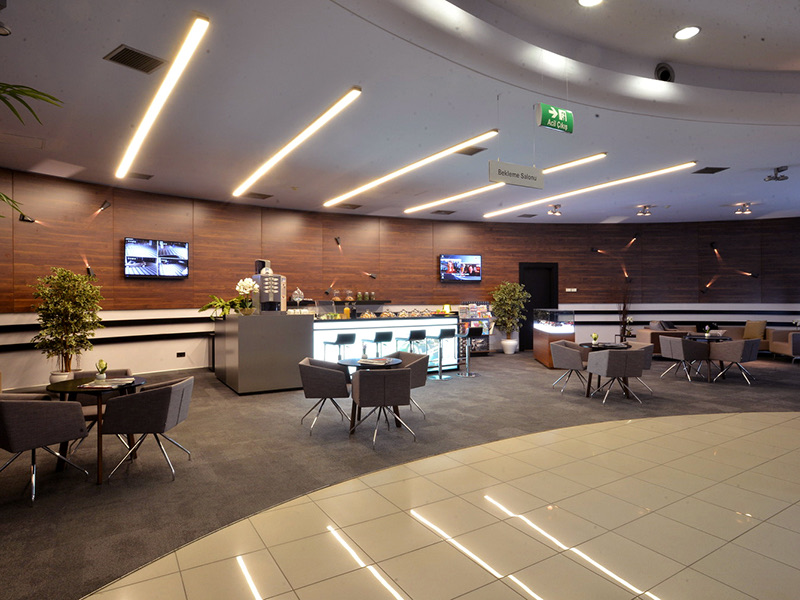

Hizmet alanı 03
Showroom ve marka mekânları
Markanın kendini anlattığı mekânlar.
01Kapsam
Neler yapıyoruz?
Otomotivden perakendeye, markanın kurumsal kimliğini mekâna taşıyoruz. Mercedes-Benz’in dünya genelindeki sekiz lisanslı tasarım ofisinden biriyiz.
- Kurumsal kimlik standartlarına uygun tasarım
- Dijital showroom ve deneyim alanları
- Bayi ve teslim alanları
- Çoklu lokasyon uygulama
02Çalışmalar
Bu alandaki çalışmalar.
 04Showroom
Mercedes-AMG
04Showroom
Mercedes-AMGAMG Lounge İstanbul Park
İncele
05Showroom Mercedes-BenzMercedes-Benz Premium Showroomlar
İncele 06Showroom
Emaar
06Showroom
EmaarEmaar Dijital Showroom
İncele 08Showroom
Volkswagen
08Showroom
VolkswagenVolkswagen Dijital Showroom
İncele 10Showroom
Mercedes-Benz
10Showroom
Mercedes-BenzMercedes-Benz Vadi İstanbul
İncele 11Showroom
Mercedes-Benz
11Showroom
Mercedes-BenzMercedes-Benz Etiler
İncele 12Showroom
Mercedes-Benz
12Showroom
Mercedes-BenzMercedes-Benz Maslak
İncele 15Showroom
Nissan
15Showroom
NissanNissan Türkiye Showroomları
İncele 16Showroom
Borusan
16Showroom
BorusanBorusan Showroom
İncele 17Showroom
Mercedes-Benz
17Showroom
Mercedes-BenzMercedes-Benz Otobüs Teslim Salonu
İncele 18Showroom
Mercedes-Benz
18Showroom
Mercedes-BenzMercedes-Benz Otoport
İncele 11Bu alanda süz03Diğer alanlar
Tek ekip, beş alan.


İletişim
Yeni ofisinizi birlikte planlayalım.
Proje türü, yaklaşık alan ve şehir yeterli; gerisini birlikte netleştiririz.